<section class="anteriores" id="linha-do-tempo">
  <div class="container">
    <h1>Linha do tempo</h1>
    <p>
      Confira uma pequena linha do tempo com os principais momentos de disputas,
      confraternização e muita diversão que já ocorreram neste lugar.
    </p>
    <br />

    <div class="timeline">
      <div class="timeline-item left">
        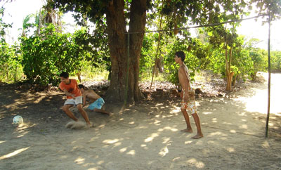
        <h2 class="titulo">A raiz de tudo...</h2>
        <h3 class="data">Natal de 2007 e anteriores</h3>
        <p>
          O futebol sempre esteve presente na família. Nunca precisou de um
          motivo muito especial para que alguém surgisse com uma bola e a
          brincadeira acontecesse. Não importava a forma de jogar: 3 toques,
          travinha, viciada, rebatida etc, o importante era brincar.
        </p>
      </div>
      <div class="timeline-item right">
        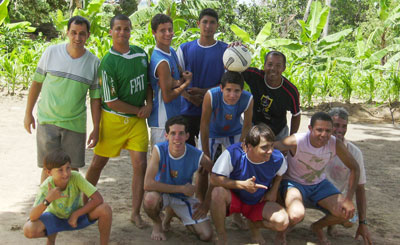
        <h2 class="titulo trofeu">Desafio de Natal #1</h2>
        <h3 class="data">25/12/2008</h3>
        <p>
          Depois de muita diversão nos anos anteriores, chegou a hora de fazer
          uma disputa de respeito entre casados e solteiros. A primeira de
          muitas. Os solteiros se saíram melhor nessa, se sagrando campeões nos
          pênaltis.
        </p>

        <p><a href="desafio-de-natal" class="button">Ver mais</a></p>
      </div>
      <div class="timeline-item left">
        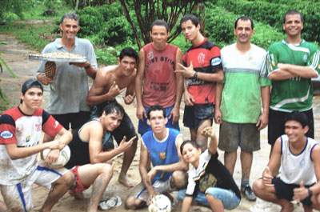
        <h2 class="titulo trofeu">Desafio de Natal #2</h2>
        <h3 class="data">26/12/2008</h3>
        <p>
          Como futebol está no sangue da família, teve repeteco no dia seguinte.
          Se no dia 25 o futebol aconteceu sob forte calor, no dia 26 aconteceu
          literalmente na lama. hahaha Os casados foram os vencedores.
        </p>

        <p><a href="desafio-de-natal" class="button">Ver mais</a></p>
      </div>
      <div class="timeline-item right">
        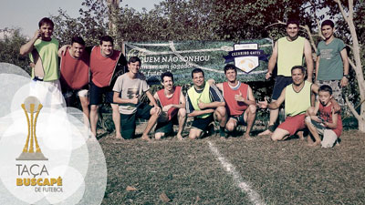
        <h2 class="titulo trofeu">Taça Buscapé</h2>
        <h3 class="data">25/12/2015</h3>
        <p>
          Tradicional disputa entre solteiros e casados. O primeiro oficial no
          novo campo de futebol. Não teve jeito, o time dos casados ganhou. Até
          aqui já são 2 vitórias dos casados e 1 dos solteiros.
        </p>

        <p><a href="taca-buscape" class="button">Ver mais</a></p>
      </div>
      <div class="timeline-item left">
        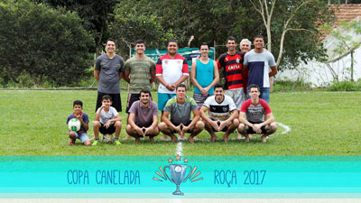
        <h2 class="titulo trofeu">Copa Canelada</h2>
        <h3 class="data">16/07/2017</h3>
        <p>
          Futebol de altíssimo nível kkkkkkkkkkk... O Time campeão foi o Walter
          FC.
        </p>

        <p><a href="copa-canelada" class="button">Ver mais</a></p>
      </div>
      <div class="timeline-item right">
        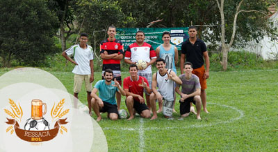
        <h2 class="titulo trofeu">RessacaBol</h2>
        <h3 class="data">06/08/2017</h3>
        <p>
          Cenas lamentáveis de um futebol após festa de arromba. O nome do
          evento explica muita coisa! Teve campeão, mas nem lembro mais qual (os
          times tinham nome de remédio).
        </p>
      </div>
      <div class="timeline-item left">
        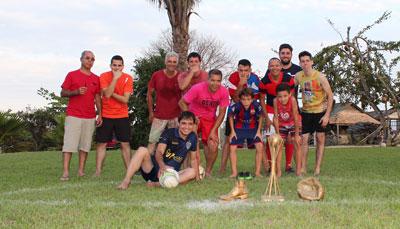
        <h2 class="titulo">Tio DudaBol</h2>
        <h3 class="data">30/09/2017</h3>
        <p>
          Comemorando o aniversário de Tio Duda em grande estilo! Dizem que os
          casados ganharam mais essa. Ainda bem que era só amistoso! 👀
        </p>
      </div>
      <div class="timeline-item right">
        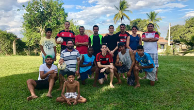
        <h2 class="titulo">Futebol na Roça</h2>
        <h3 class="data">05/11/2017</h3>
        <p>
          Aquela pelada de respeito com os amigos teve que se repetir! Nessa
          <em>"ninguém vai ganhar nem perder. Vai todo mundo perder".</em>
        </p>
      </div>
      <div class="timeline-item left">
        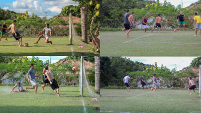
        <h2 class="titulo">Thereza 85</h2>
        <h3 class="data">21/07/2018</h3>
        <p>
          Futebol de lei no aniversário da Matriarca Vó Thereza. Família
          reunida, momentos de alegria e muita habilidade em campo (ou não kkk).
        </p>
      </div>
      <div class="timeline-item right">
        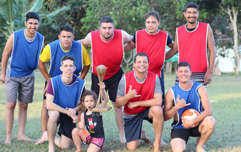
        <h2 class="titulo">GabrielBol</h2>
        <h3 class="data">22/09/2018</h3>
        <p>
          Visita do primo Gabriel. Não poderia faltar aquele futebol amistoso,
          claro!
        </p>
      </div>
      <div class="timeline-item left">
        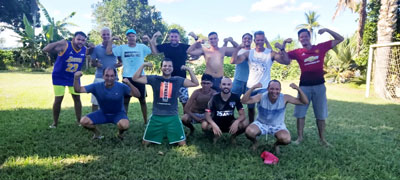
        <h2 class="titulo">Bodas de Prata</h2>
        <h3 class="data">03/04/2022</h3>
        <p>
          ÓBVIO que ia rolar futebol nas Bodas de Prata de tio Geraldo e tia
          Tika, né! Torneio amistoso.
        </p>
      </div>
      <div class="timeline-item right">
        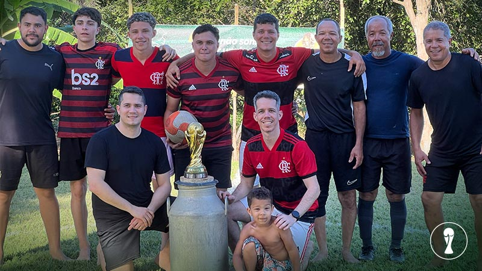
        <h2 class="titulo trofeu">Copa Raízes 2024</h2>
        <h3 class="data">22/12/2024</h3>
        <p>
          Praticamente 9 anos depois do último torneio oficial entre Casados e
          Solteiros da família, a Taça Buscapé, que teve como campeão o time dos
          casados, foi a vez dos Solteiros se sagrarem campeões da 1ª edição da
          Copa Raízes, igualando agora o placar histórico da disputa com 2
          vitórias para cada equipe.
        </p>
      </div>
      <div class="timeline-item left">
        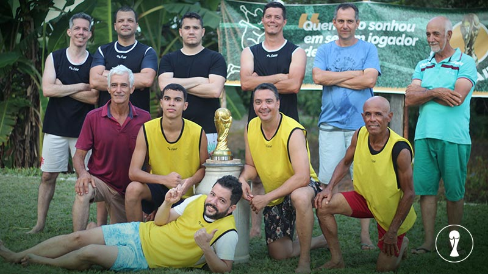
        <h2 class="titulo trofeu">Especial de Natal 2024</h2>
        <h3 class="data">25/12/2024</h3>
        <p>
          O Especial de Natal de 2024 contou com duas partidas entre a equipe da
          Família Gatti e a equipe dos visitantes. Na primeira partida os
          visitantes levaram a melhor. No segundo jogo, a equipe da Família
          Gatti venceu e, assim, ambas as equipes eternizaram seus nomes como
          campeões da Copa Raízes.
        </p>
      </div>
    </div>
  </div>
</section>
